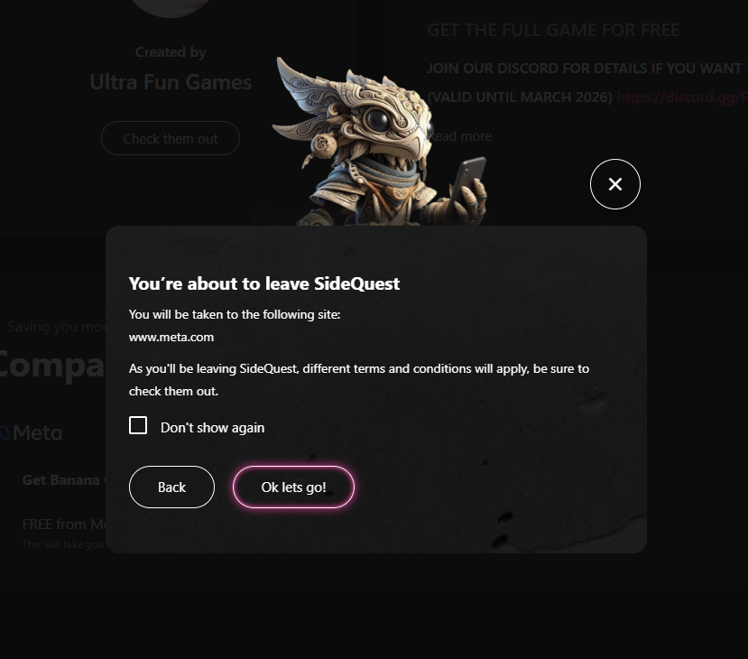
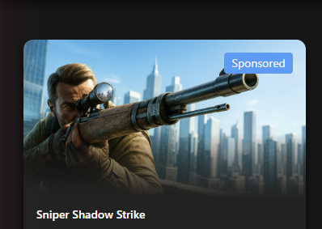
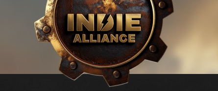
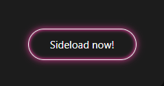
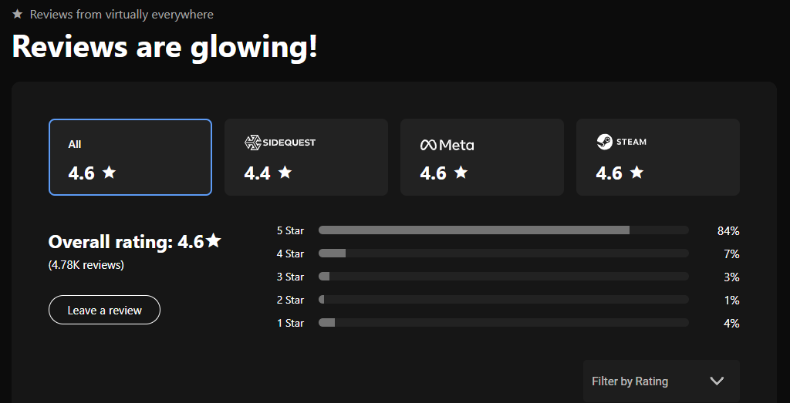
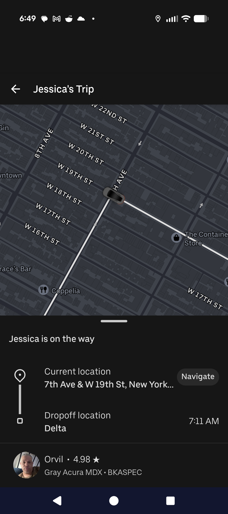
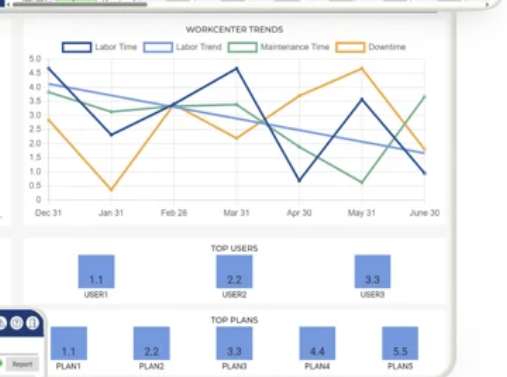
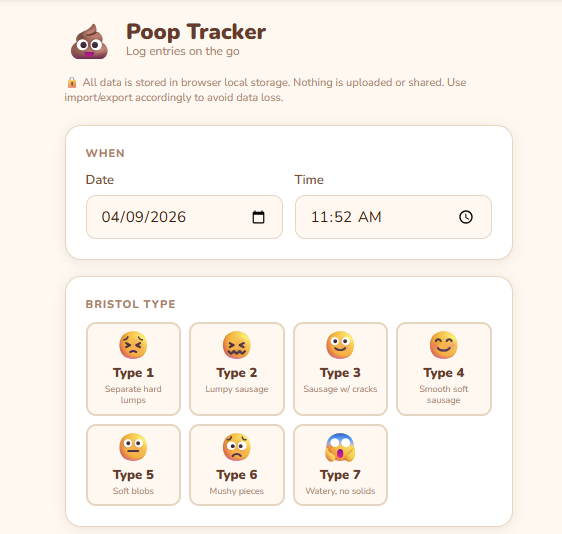
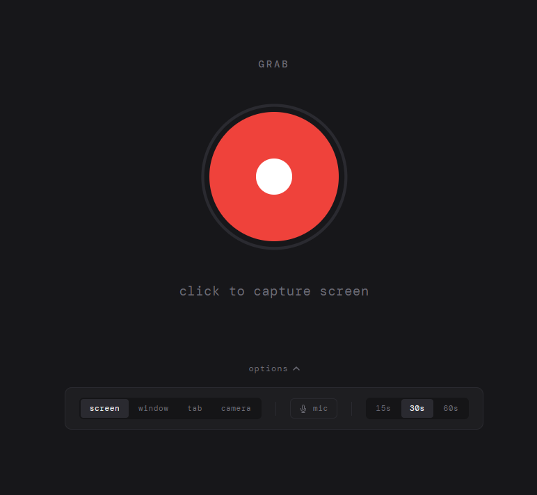

Case Studies
Selected Work
A few projects that show how I think, from framing the problem to shipping and measuring the outcome.

Saying No to Revenue: Meta Affiliate Links at SideQuest
How a structured pilot turned a "no-brainer" revenue opportunity into a clear no.

From Bugs to Revenue: Ad Slot Experiments at SideQuest
Two bug reports that turned into CTR lifts of 41–80% and 0.05% to 1.0%.

Indie Alliance: Validating a Community-Led Revenue Model
How a free v0 with nothing to sell became the foundation for 25K new community members.

Owning Our Core: The Sideloading Overhaul at SideQuest
A ground-up rethink of SideQuest's most foundational feature.

Building the Foundation: Cross-Store Catalogue Integration
Turning a broad top-down mandate into a scoped Phase 1 grounded in user research.

The Long Way Was The Right Way: CarPlay and RV GPS at Roadtrippers
Convincing leadership to do four things users couldn't see — so that the one thing they were asking for could actually ship well.

Finding the Pattern: Reporting Add-On at CIMx
Noticing that the same custom work kept getting sold over and over — and productizing it.
BPM Finder: Building a Music Analysis Tool
A narrow workflow problem turned prototyping vehicle.

Poop Tracker: A Private, Offline Health Logging Tool
The pediatrician needed data. Every existing app wanted to store it in the cloud. That was a non-starter.

Grab
A screen recorder built in one conversation because every other option was too much.
Convert Stuff
FFmpeg in the browser. No server, no uploads, no ads. Drop a file, get a file back.